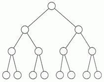

En las listas, después de cada elemento había otro, el “siguiente” (o ninguno, si habíamos llegado al final).
Pero también nos puede interesar tener varias posibilidades después de cada elemento, varios “hijos”, por ejemplo 3. De cada uno de estos 3 “hijos” saldrían otros 3, y así sucesivamente. Obtendríamos algo que recuerda a un árbol: un tronco del que nacen 3 ramas, que a su veces se subdividen en otras 3 de menor tamaño, y así sucesivamente hasta llegar a las hojas.
Pues eso mismo será un árbol: una estructura dinámica en la que cada nodo (elemento) puede tener más de un “siguiente”. Nos centraremos en los árboles binarios, en los que cada nodo puede tener un hijo izquierdo, un hijo derecho, ambos o ninguno (dos hijos como máximo).

Para puntualizar aun más, trataremos los árboles binarios de búsqueda, en los que tenemos prefijado un cierto orden, que nos ayudará a encontrar un cierto dato dentro de un árbol con mucha rapidez.
Este "orden prefijado" será el siguiente: para cada nodo tendremos que
* la rama de la izquierda contendrá elementos menores que él.
* la rama de la derecha contendrá elementos mayores que él.
Para que se entienda mejor, vamos a introducir en un árbol binario de búsqueda los datos 5,3,7,2,4,8,9
Primer número: 5 (directo)
5
Segundo número: 3 (menor que 5)
5
/
3
Tercer número: 7 (mayor que 5)
5
/ \
3 7
Cuarto: 2 (menor que 5, menor que 3)
5
/ \
3 7
/
2
Quinto: 4 (menor que 5, mayor que 3)
5
/ \
3 7
/ \
2 4
Sexto: 8 (mayor que 5, mayor que 7)
5
/ \
3 7
/ \ \
2 4 8
Séptimo: 9 (mayor que 5, mayor que 7, mayor que 8)
5
/ \
3 7
/ \ \
2 4 8
\
9
¿Qué ventajas tiene esto? La rapidez: tenemos 7 elementos, lo que en una lista supone que si buscamos un dato que casualmente está al final, haremos 7 comparaciones; en este árbol, tenemos 4 alturas => 4 comparaciones como máximo.
Y si además hubiéramos “equilibrado” el árbol (irlo recolocando, de modo que siempre tenga la menor altura posible), serían 3 alturas. Esto es lo que se hace en la práctica cuando en el árbol se va a hacer muchas más lecturas que escrituras: se reordena internamente después de añadir cada nuevo dato, de modo que la altura sea mínima en cada caso. De este modo, el número máximo de comparaciones que tendríamos que hacer sería log2(n), lo que supone que si tenemos 1000 datos, en una lista podríamos llegar a tener que hacer 1000 comparaciones, y en un árbol binario, log2(1000) => 10 comparaciones como máximo. La ganancia en velocidad de búsqueda es clara.
No vamos a ver cómo se hace eso de los “equilibrados”, que sería propio de un curso de programación más avanzado, pero sí vamos a empezar a ver rutinas para manejar estos árboles binarios de búsqueda.
Recordemos que la idea importante es que todo dato menor estará a la izquierda del nodo que miramos, y los datos mayores estarán a su derecha.
Ahora la estructura de cada nodo (dato) será:
struct arbol { /* El tipo base en sí: */
int dato; /* - un dato (entero) */
struct arbol* hijoIzq; /* - puntero a su hijo izquierdo */
struct arbol* hijoDer; /* - puntero a su hijo derecho */
};
Y las rutinas de inserción, búsqueda, escritura, borrado, etc., podrán ser recursivas. Como primer ejemplo, la de escritura de todo el árbol en orden sería:
void Escribir(struct arbol *punt)
{
if (punt) /* Si no hemos llegado a una hoja */
{
Escribir(punt->hijoIzq); /* Mira la izqda recursivamente */
printf("%d ",punt->dato); /* Escribe el dato del nodo */
Escribir(punt->hijoDer); /* Y luego mira por la derecha */
};
};
Quien no se crea que funciona, debería coger lápiz y papel comprobarlo con el árbol que hemos visto antes como ejemplo. Es muy importante que esta función quede clara antes de seguir leyendo, porque los demás serán muy parecidos.
La rutina de inserción sería parecida, aunque algo más "pesada" porque tenemos que pasar el puntero por referencia, para que se pueda modificar el puntero:
void Insertar(struct arbol **punt, int valor)
{
struct arbol * actual= *punt;
if (actual == NULL) /* Si hemos llegado a una hoja */
{
*punt = (struct arbol *)
malloc (sizeof(struct arbol)); /* Reservamos memoria */
actual= *punt;
actual->dato = valor; /* Guardamos el dato */
actual->hijoIzq = NULL; /* No tiene hijo izquierdo */
actual->hijoDer = NULL; /* Ni derecho */
}
else /* Si no es hoja */
if (actual->dato > valor) /* Y encuentra un dato mayor */
Insertar(&actual->hijoIzq, valor); /* Mira por la izquierda */
else /* En caso contrario (menor) */
Insertar(&actual->hijoDer, valor); /* Mira por la derecha */
};
Y finalmente, la de borrado de todo el árbol, casi igual que la de escritura, sólo que en vez de borrar la izquierda, luego el nodo y luego la derecha, borraremos primero las dos ramas y en último lugar el nodo, para evitar incongruencias (intentar borrar el hijo de algo que ya no existe):
void Borrar(struct arbol *punt)
{
if (punt) /* Si no hemos llegado a una hoja */
{
Borrar(punt->hijoIzq); /* Va a la izqda recursivamente */
Borrar(punt->hijoDer); /* Y luego a la derecha */
free (punt); /* Finalmente, libera lo que ocupa el nodo */
};
};
Vamos a juntar todo esto en un ejemplo "que funcione":
/*---------------------------*/
/* Ejemplo en C nº 83: */
/* C083.C */
/* */
/* Arbol binario de */
/* búsqueda */
/* */
/* Curso de C, */
/* Nacho Cabanes */
/*---------------------------*/
#include
#include
struct arbol { /* El tipo base en sí: */
int dato; /* - un dato (entero) */
struct arbol* hijoIzq; /* - puntero a su hijo izquierdo */
struct arbol* hijoDer; /* - puntero a su hijo derecho */
};
void Escribir(struct arbol *punt)
{
if (punt) /* Si no hemos llegado a una hoja */
{
Escribir(punt->hijoIzq); /* Mira la izqda recursivamente */
printf("%d ",punt->dato); /* Escribe el dato del nodo */
Escribir(punt->hijoDer); /* Y luego mira por la derecha */
}
}
void Insertar(struct arbol **punt, int valor)
{
struct arbol * actual= *punt;
if (actual == NULL) /* Si hemos llegado a una hoja */
{
*punt = (struct arbol *)
malloc (sizeof(struct arbol)); /* Reservamos memoria */
actual= *punt;
actual->dato = valor; /* Guardamos el dato */
actual->hijoIzq = NULL; /* No tiene hijo izquierdo */
actual->hijoDer = NULL; /* Ni derecho */
}
else /* Si no es hoja */
if (actual->dato > valor) /* Y encuentra un dato mayor */
Insertar(&actual->hijoIzq, valor); /* Mira por la izquierda */
else /* En caso contrario (menor) */
Insertar(&actual->hijoDer, valor); /* Mira por la derecha */
}
/* Cuerpo del programa */
int main()
{
struct arbol *arbol = NULL;
Insertar(&arbol, 5);
Insertar(&arbol, 3);
Insertar(&arbol, 7);
Insertar(&arbol, 2);
Insertar(&arbol, 4);
Insertar(&arbol, 8);
Insertar(&arbol, 9);
Escribir(arbol);
return 0;
}